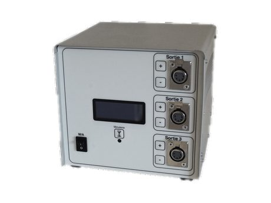
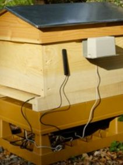
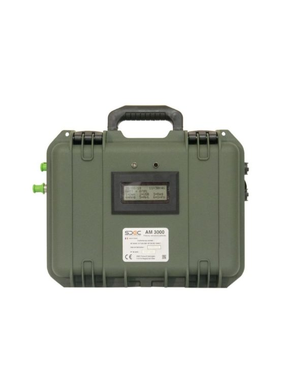

Boîtier fer à fileter
Premier poste : apprendre à fabriquer — du schéma au produit qui sort de l’atelier.
Le boîtier de puissance alimente et régule les fers à fileter le cuir des ateliers de maroquinerie. Je l’ai industrialisé de bout en bout, en trois variantes.
Le boîtier
De la carte analogique au microcontrôleur, puis à la série.
Alimenter et réguler
Le boîtier de puissance alimente et régule les fers à fileter le cuir des ateliers de maroquinerie.
Passage au microcontrôleur
- Évolution de la carte analogique vers une architecture à µC.
- Firmwares des différentes versions, en C et CUBLOC.
Régulation de température et de puissance
- Régulation de température pour Hermès.
- Régulation de puissance pour les autres clients.
Mise en production et suivi
- DFM, DFA, DFT puis mise en production.
- Programmation et test à chaque série.

Le produit en série
Environ 3 000 pièces par an, toujours en production aujourd’hui.
Les autres projets Atelec
Prototypes et support production, en parallèle du boîtier.

Beeonline — ruche connectée
Carte et soft embarqué développés avec un apiculteur : GSM, capteurs de poids, température, humidité.

AM3000 — détecteur d’amiante
Cartes prototypes et portage du code Pascal vers C sur dsPIC, pour SDEC.
Support production & SAV
Panneaux à messages variables des radars pédagogiques · switchs RF et interfaces LabVIEW · analyse SAV des produits du groupe.